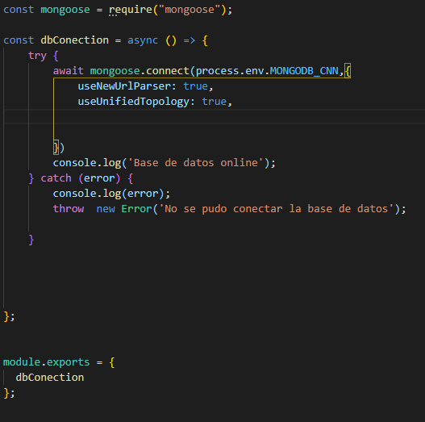

hyperblog
Tu blog de confianza y pues confia en nosotros
Este es el titulo atractivo e interesante del pos

y este es el párrafo de inicio donde vamos a explicar las cosas increíbles que se pueden hacer con ramas
los blogs soon la mejor forma de compartir información y tus ideas. mucho mas que ir a conferencias o salir en youtube. Excepto si eres un rockstar. Pero estadisticamente no lo eres... por ahora
suscribete y dale a like